Азбука схем - 2
Начало смотри в Азбука схем
Не секрет, что в схеме какая-либо радиодеталь, например микросхема может соединяться огромным количеством проводников с другими элементами схемы. Для того чтобы высвободить место на принципиальной схеме и убрать "повторяющиеся соединительные линии" их объединяют в своеобразный "виртуальный" жгут - обозначают групповую линию связи.
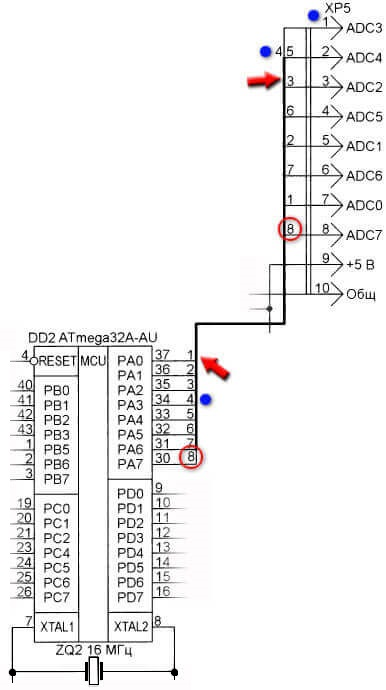
Рис. 1 - Пример обозначения групповой линии связи
Групповая линия имеет большую толщину, чем другие проводники в схеме. Чтобы не запутаться, куда какие проводники идут, их нумеруют.
На рисунке отмечен соединительный провод под номером 8. Он соединяет 30 вывод микросхемы DD2 и 8 контакт разъёма XP5. Кроме этого, обратите внимание, куда идёт 4 провод. У разъёма XP5 он соединяется не со 2 контактом разъёма, а с 1, поэтому и указан с правой стороны соединительного проводника. Ко 2-му же контакту разъёма XP5 подключается 5 проводник, который идёт от 33 вывода микросхемы DD2. Отмечу, что соединительные проводники под разными номерами электрически между собой не связаны, и на реальной печатной плате могут быть разнесены по разным частям платы.
Электронная начинка многих приборов состоит из блоков. А, следовательно, для их соединения применяются разъёмные соединения.
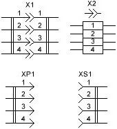
Рис. 2 - Разъёмные соединения на схемах
XP1 - это вилка, XS1 - это розетка. Всё вместе это разъём X1 (X2).
Также в электронных устройствах могут быть механически связанные элементы.
Например, есть переменные резисторы, в которые встроен выключатель. Пунктирная линия указывает на механическую связь этих элементов.
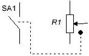
Рис. 3 - Обозначение переменного резистора со встроенным выключателем
SA1 - выключатель, R1 - переменный резистор.
Ранее такие переменные резисторы очень часто применялись в портативных радиоприёмниках. При повороте ручки регулятора громкости (нашего переменного резистора) сначала замыкались контакты встроенного выключателя. Таким образом, мы включали приёмник и сразу той же ручкой регулировали громкость. Электрического контакта переменный резистор и выключатель не имеют. Они лишь связаны механически.
Такая же ситуация обстоит и с электромагнитными реле. Сама обмотка реле и его контакты не имеют электрического соединения, но механически они связаны. Подаём ток на обмотку реле - контакты замыкаются или размыкаются.
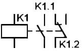
Рис. 4 - Обозначение электромагнитного реле и его контактов на схеме
Так как управляющая часть (обмотка реле) и исполнительная (контакты реле) могут быть разнесены на принципиальной схеме, то их связь обозначают пунктирной линией. Иногда пунктирную линию вообще не рисуют, а у контактов просто указывают принадлежность к реле (K1.1) и номер контактной группы (К1.1) и (К1.2).
Ещё довольно наглядный пример - это регулятор громкости стереоусилителя. Для регулировки громкости требуется два переменных резистора. Но регулировать громкость в каждом канале по отдельности нецелесообразно. Поэтому применяются сдвоенные переменные резисторы, где два переменных резистора имеют один регулирующий вал. Вот пример из реальной схемы.
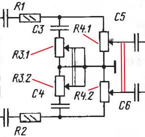
Рис. 5 - Сдвоенные резисторы на схеме
На рисунке я выделил красным две параллельные линии - именно они указывают на механическую связь этих резисторов, а именно на то, что у них один общий регулирующий вал. Возможно, вы уже заметили, что эти резисторы имеют особое позиционное обозначение R4.1 и R4.2. Где R4 - это резистор и его порядковый номер в схеме, а 1 и 2 указывают на секции этого сдвоенного резистора.
Также механическая связь двух и более переменных резисторов может указываться пунктирной линией, а не двумя сплошными. Электрически эти переменные резисторы не имеют контакта между собой. Их выводы могут быть соединены только в схеме.
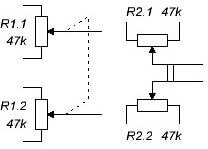
Рис. 6 - Обозначение сдвоенных переменных резисторов
Многие узлы радиоаппаратуры чувствительны к воздействию внешних или "соседствующих" электромагнитных полей. Особенно это актуально в приёмопередающей аппаратуре. Чтобы защитить такие узлы от воздействия нежелательных электромагнитных воздействий их помещают в экран, экранируют (рис. 7). Как правило, экран соединяют с общим проводом схемы.
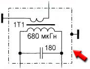
Рис. 7 - Обозначение экрана на принципиальной схеме
Здесь экранируется контур 1T1, а сам экран изображается штрих-пунктирной линией, который соединён с общим проводом. Экранирующим материалом может быть алюминий, металлический корпус, фольга, медная пластина и т.д.
На рисунке 8 показано обозначение экранированных линий связи. На рисунке в правом нижнем углу показана группа из трёх экранированных проводников.
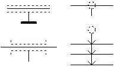
Рис. 8 - Обозначение экранированных линий связи
Похожим образом обозначается и коаксиальный кабель (рис. 9).
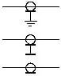
Рис. 9 - Обозначение коаксиального кабеля на схеме
В реальности экранированый провод (коаксиальный) представляет собой проводник в изоляции, который снаружи покрыт или обмотан экраном из проводящего материала. Это может быть медная оплётка или покрытие из фольги. Экран, как правило, соединяют с общим проводом и тем самым отводят электромагнитные помехи и наводки.
Повторяющиеся элементы.
Бывают нередкие случаи, когда в электронном устройстве применяются абсолютно одинаковые элементы и загромождать ими принципиальную схему нецелесообразно (рис. 10).
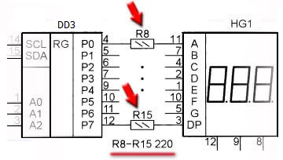
Рис. 10 - Повторяющие однотипные элементы в схеме
Здесь мы видим, что в схеме присутствуют одинаковые по номиналу и мощности резисторы R8 - R15. Всего 8 штук. Каждый из них соединяет соответствующий вывод микросхемы и четырёхразрядный семисегментный индикатор. Чтобы не указывать эти повторяющиеся резисторы на схеме их просто заменили жирными точками.
На рисунке 11 обратите внимание на то, как вместо трёх одинаковых конденсаторов C1 - C3 на схеме указан лишь один конденсатор, а рядом отмечено количество этих конденсаторов. Как видно из схемы, данные конденсаторы необходимо соединить параллельно, чтобы получить общую ёмкость 3 мкФ.
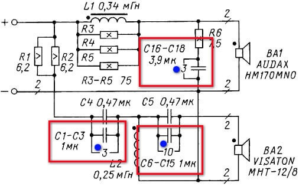
Рис. 11 - Сокращённое обозначение повторяющихся элементов на схеме
Аналогично и с конденсаторами C6 - C15 (10 мкФ) и C16 - C18 (11,7 мкФ). Их необходимо соединить параллельно и установить на место обозначенных конденсаторов.
Следует отметить, что правила обозначения радиодеталей и элементов на схемах в зарубежной документации несколько иные.
Источники
go-radio.ru - Как читать электронные схемы? Учимся читать принципиальные электрические схемы